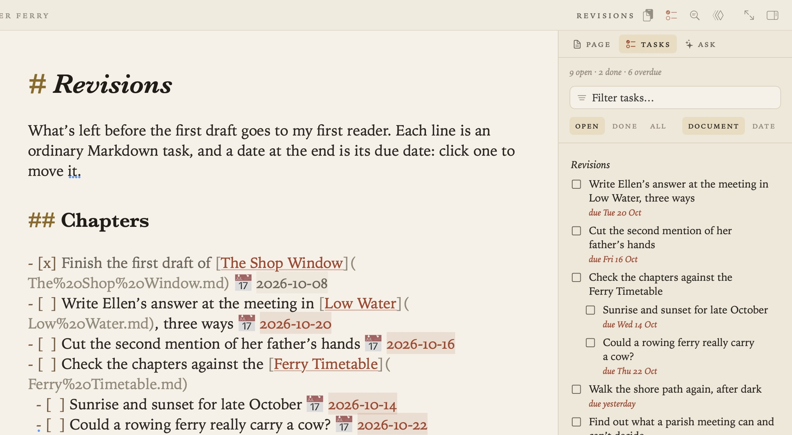
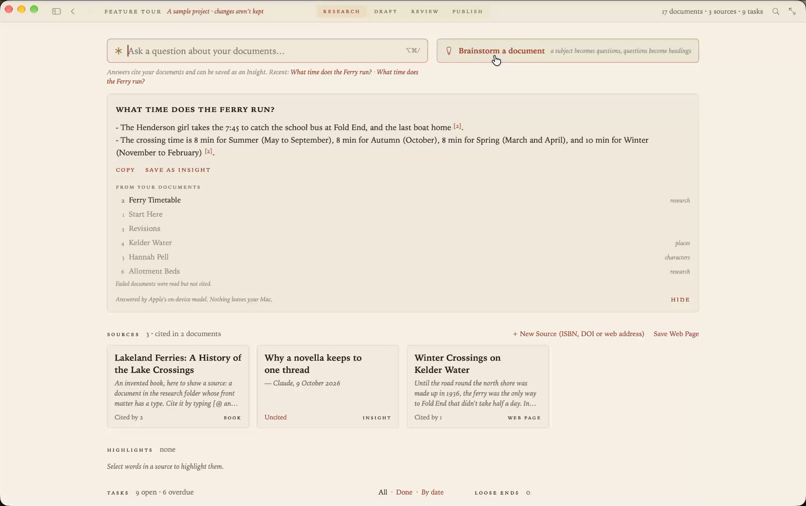

A Markdown editor for students
You have reading to keep track of, essays to write and a deadline for each. Grasmere is a Mac app that keeps all of it in plain Markdown files, writes your citations and reference list for you, and hands in a Word document or a PDF at the end.

Why students write in Markdown
Markdown is plain text with a few marks in it. A # starts a heading, *stars* make italics and a - starts a list. You can learn it in ten minutes.
What matters is what you stop doing. You don’t fight with fonts and margins while you’re trying to think, because the formatting happens when you export. And your essays are ordinary files that open in any editor, on any computer, long after you’ve graduated.
In Grasmere the marks stay on the page but faint, and headings, emphasis and lists are styled as you type. If you’d rather not type them, the Format menu and the usual shortcuts write them for you.
Keep your reading with your writing
Each project has a research folder, and what goes in it becomes a source you can cite.
- Save a web page and Grasmere keeps the article as Markdown, without the menus, adverts and cookie banners.
- Drop in a paper’s PDF and it’s looked up by its DOI or arXiv number, so the authors, journal and year are filled in.
- Add a book by its ISBN.
- Highlight as you read, in a saved page or a PDF. Your highlights are collected in one document, each with a link back to where it came from.
If your references are already in Zotero, you can bring them in.

Citations and a reference list, written for you
Type [@ where the citation goes and pick the source by its author, title or year. Add a page number if you need one.
Starters are alive [Field 2019, p. 12](../research/The%20Living%20Loaf.md).When you export, each citation is written in the style your department asks for, and the sources you cited are listed at the end. Grasmere writes APA 7, Harvard, Chicago author-date and MLA 9. Choose another style and every citation follows. There’s more in Citations and bibliographies in Markdown.
Hand in Word or PDF
File ▸ Export ▸ Word Document makes a proper .docx, with Word’s own heading styles, real footnotes, page numbers and your reference list. File ▸ Export ▸ PDF typesets the same essay on A4 or Letter pages. Whoever marks it never needs to know it began as Markdown.

When your tutor sends comments back
Send a draft as a Word file. Your tutor or supervisor comments and tracks changes in Word, Pages or Google Docs, as they would for anyone. Drop their copy back into Grasmere and each comment and change appears beside your text, to accept, reject or reply to. Nothing in your draft changes until you say so. See Markdown to Word, and back again.

Word counts and deadlines
Give an essay a word target and a date. The bar beneath the page shows where you are.
8,015 of 12,000 · 640 today · ~190 a day to 31 OctTasks are Markdown checkboxes, written wherever they occur to you. Put a date at the end of one and it has a due date. Grasmere gathers every task in the project into one list, with the overdue ones first.

AI that asks questions and leaves the essay to you
Brainstorm turns your subject into questions, the kind a good tutor would ask, and makes them the headings of a new document. The answers are yours to write. Ask Your Documents answers a question from your own notes and sources, and cites the passages it used.
Both use Apple’s on-device model by default, on a Mac with Apple Intelligence, so nothing leaves your computer. Neither writes your essay for you. If you never choose them, Grasmere is a Markdown editor with no AI in it at all.

What it costs
Grasmere is free for 14 days, then $14.99 once. There’s no subscription and no account to make.
Questions
Do I need to know Markdown already?
No. Help ▸ Feature Tour opens a sample project that walks you through the app, one thing to try at a time.
Which citation styles are there?
APA 7, Harvard, Chicago author-date and MLA 9. Numbered styles such as Vancouver and IEEE, and footnote styles such as OSCOLA, aren’t supported. Check which your course asks for before you rely on it.
Does it work on an iPad or on Windows?
No. Grasmere is a Mac app and needs macOS 15 or later. Your documents are plain Markdown files, so you can still read and edit them anywhere, in any text editor.
Where are my files kept?
In the folder you choose, as ordinary .md files. iCloud Drive and Dropbox both work. Nothing is kept in a database, and Grasmere has no server.
Write your next essay in Markdown.
Open a folder, save your first source and cite it. The trial is free for 14 days.
Download for macOS Free for 14 days, then $14.99 once · macOS 15+Related
- A free academic CV template, in Markdown and LaTeX
- Writing a thesis in Markdown
- Using Zotero with Markdown
- Citations and bibliographies in Markdown
- The Research guide
- More on writing in Markdown
Last updated .